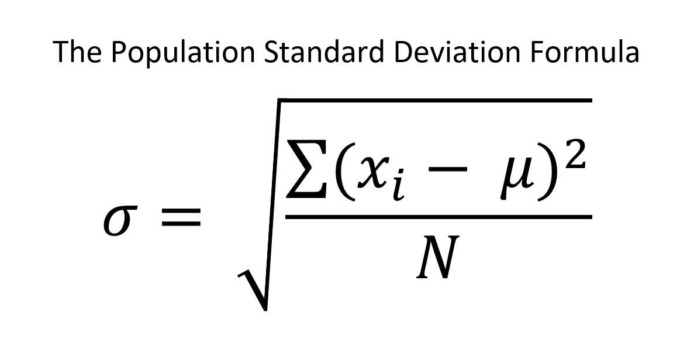
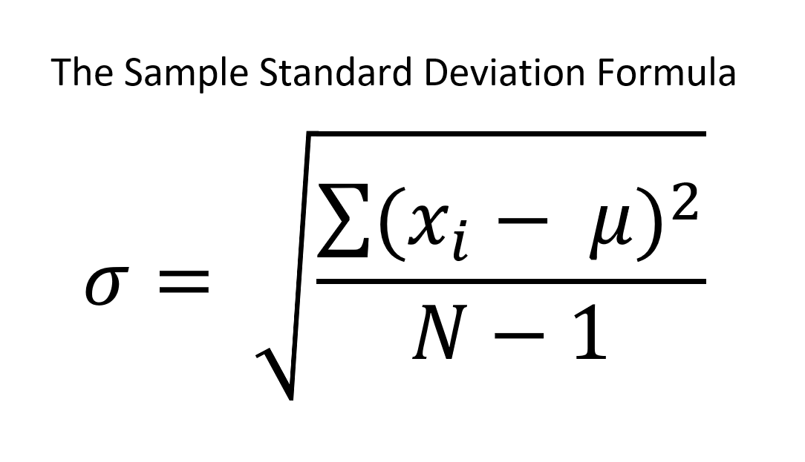

In statistics, the standard deviation refers to the measure of variation amongst a set of given data values, with relation to the mean of the set. A measure of variation is often described as a way of showing how data is dispersed. Simply put, the standard deviation can show one how far apart his or her data points are spread out.
Since the standard deviation can inform one on how closely centralized or spread out a collection of outcomes are, it often becomes easier to make inferences about the data, which can lead to more precise decisions. An example where the standard deviation is often calculated would be its uses in finance, which owners of a business can use to understand risk management regarding an assortment of financial outcomes. This information can be used to make better business decisions.
There are two types of standard deviation calculations. These two types are the population standard deviation, and the sample standard deviation. The distinction between these two calculations is worth considering because of what is known as statistical bias. Statistical bias is often defined as a systematic deviation from the actual value. It relates to a statistic that can underestimate or overestimate the population parameter that is attempting to be measured.
The population standard deviation is said to be a parameter. That is, it describes a number that represents an entire population. So a population data set must contain all members of a specified group. An example where one would need to use the population standard deviation would be when a basketball team coach wants to determine the standard deviation and the mean of the scores for all members on his basketball team. The reason the population standard deviation would be used here and not the sample standard deviation is because the coach is only concerned with the members of his team. If the concern was with ALL basketball players (All players in the world), then he would need to use the sample standard deviation because his team would only be a sample of the entire group of all basketball players.
The sample standard deviation is considered to be a statistic. This means that the sample standard deviation is a calculation that is only derived from some members that are in a population. An example where one would need to use the sample standard deviation would be when a biologist would want to determine the mean and standard deviation of the weight of a specific species of crab. It would be nearly impossible to gather data for every member of the group (which would be every alive and every recently dead crab of the target species), instead the biologist would only gather a sample of some members of the population.
The user can choose to calculate the popoulation/sample standard deviation by selecting the appropriate option from the dropdown menu. The text box below is where the user can input a series of numeric data entries in order to calculate the population/sample standard deviation. The user is expected to put a comma between each data entry. A comma does not go before the first entry or after the last entry. This is the only acceptable format. No calculation will occur if the user fails to input data entries using this format. There will be a series of entries already in the text box to act as a demostration of how the user is expected to input data entries.